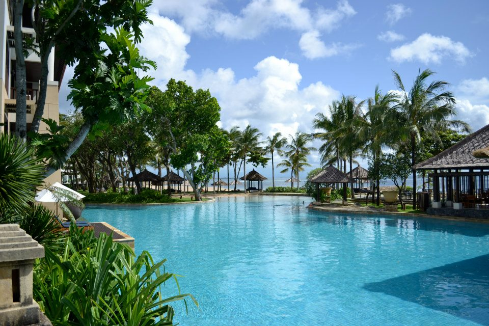
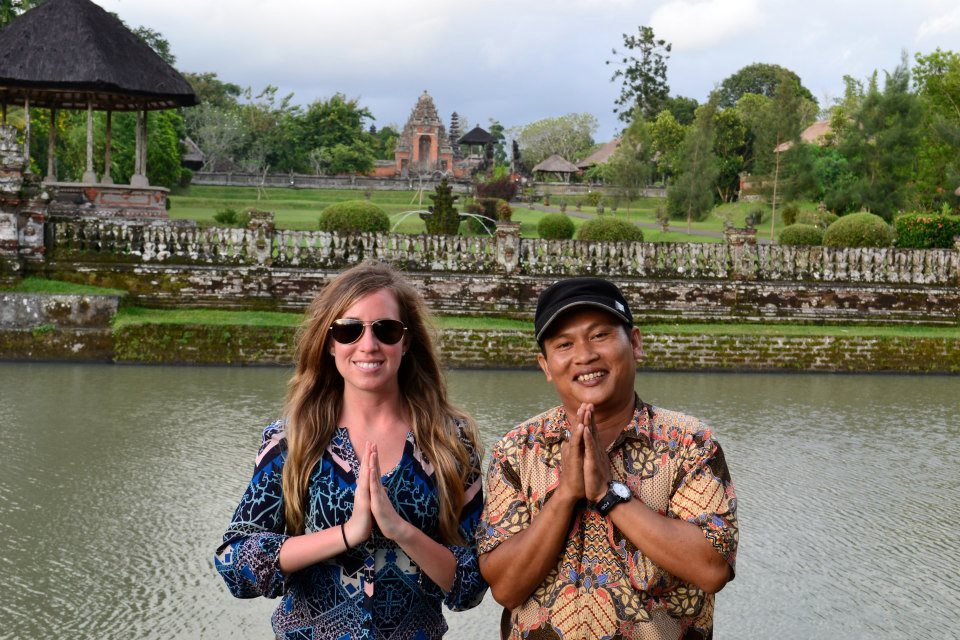

bali, indonesia
Bali has been hands down the best place I have ever visited. I don't even know where to begin. The people, the culture/religion, the beauty of the island, the food, and the incredible deals are just to name a few reasons why Bali is my favorite place.  I visited Bali in January and highly recommend visiting during that time. I stayed at the Conrad Hilton and basically had the entire place to myself. There were very few tourists which was great. I literally had the infiniti pools all to myself. I spent a day just swimming in their beautiful pools that seem to go on forever into the ocean.
I hired a Balanese private yoga instructor and we practiced yoga in a beautiful outdoor temple. The cost? $10. I felt as though what I had been practicing in the US was not actual yoga. In Bali they take yoga seriously and you hold the positions for what seem like forever, creating a concentration and focus in your mind and body. The instructor told me that I need to practice yoga 10 minutes every morning. I need to do that. He was very focused, calm, and no nonsense. I will never forget that experience and hope to be able to practice yoga in Bali again someday.
The people in Bali were simply amazing.  I hired a private driver to drive me around the island for an entire day (12 hours to be exact). The price? $50 for the entire day. The driver was so sweet. He taught me about the Hindu religion and how religion is engraved in everything the Balanese people do. They believe in Karma and believe that if someone is bad in this lifetime they will pay the price in their next life. There are 60,000 temples in the small island of Bali. I was able to go to a couple of the temples in the limited amount of time I had on the island. They are such sanctuaries. The Balanese women spend their spare time creating gifts for the temples. They select pretty flowers and put them in small baskets to give as a gift. I saw one of the women creating one of them and offered her money for one and she said "no, no... it's a gift... and gave it to me to give to the temple." I was a little taken aback because I am so accustomed to paying for everything in the United States. I was not used to this form of generousity. I found the Balanese people to be kind, generous, and content with life.